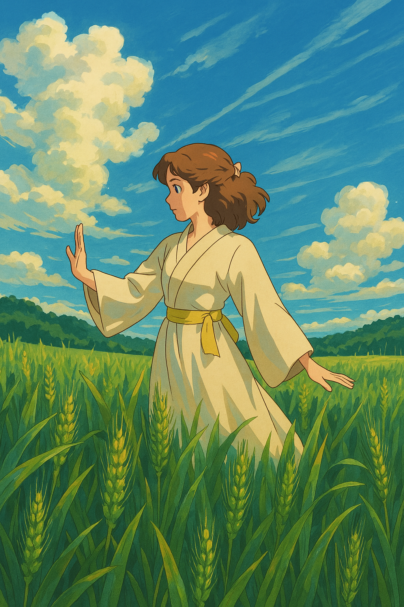

Hello everyone

Hi! I’m Dasha — I’ve been knitting for over three years now. It all started as a small hobby at home, just making cozy things for myself and my husband. I quickly fell in love with the process — the texture, the calm, and the joy of turning yarn into something warm and meaningful. What began with simple gifts turned into a true passion. Today, I still knit with the same love and care, always focusing on comfort, quality, and a bit of personality in every piece. Knitting for me isn’t just about clothes — it’s about sharing warmth, creating with heart, and enjoying every stitch along the way.